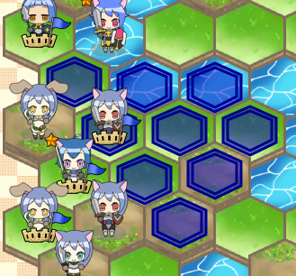

目次
1.初めに
1-1.概要
2.ゲームの進め方とメニュー
2-1.ゲームパターン
2-2.選択メニュー
2-3.その他
2-4.勝敗
2-5.ゲームの進め方
2-6.各種情報
2-7.ゲーム終了時のメニュー
1.初めに
1-1.概要
1-1-1.どんなゲーム？
GaiHexを一言でいえば、SPRGに運の要素を排除して、将棋の様な要素をちょっと振りかけて、戦略要素を隠し味を添えたものです。あぁ、一言じゃない上に何を言っているかわかりませんね。運の要素を排除したからと言って、二人零和有限確定完全情報ゲームではありません。有限ではありませんし、情報が多すぎるので完全情報と言われても苦しいでしょうし、将来的に...ね。
（とってつけた）コンセプトとして 1つのルールで、 2つ以上のチームで対戦し、 3つのゲーム時間を調整でき、 4つのマップモード（固定マップ除いて）があり、 5つのゲームモードを選択し、 6つの辺を持つマップで、 7つのオプションを選択でき、 8つのチーム（１つはランダム）を自由に選べ、 9つハンデを調整でき、 10つの...（思付かない）...でできています。。
1-1-2.登場するユニットは何？
大人の事情により書けませんが、察していただけると助かります。マニュアルになんでも書いてあると思うなよ。
2.ゲームの進め方とメニュー
2-1.ゲームパターン
2-1-1.トップメニュー
本ゲームには５つのゲームモードがあります。それぞれの特徴を説明します。
2-1-2.通常対戦
同じ条件で行われます。ただし、上位ユニットに関しては同じではありません。敵の上位ユニットは味方が採用しなかったユニットを採用されます。
2-1-3.キャンペーン
１４ラウンドを戦います。味方はユニット引き継ぎますが、敵はラウンドを重ねると増え＆強くなっていきます。
2-1-4.大量敵対戦
敵はヒットポイントが少なめな下位ユニットが多く登場します。また開始時に敵には多くのエリアポイントが付与されており、次々とユニットが生成されます。また、敵は上位ユニットにクラスチェンジはしません。
2-1-5.強敵対戦
経験値があるユニットが登場します。ただし、数は少なめです。また、ユニット生成に必要なエリアポイントは通常の倍かかります。
2-1-6.チーム対戦
複数ラウンドを戦いますが、味方の上位ユニットは１回しか登場させることはできません。また、ラウンドが進むと敵の上位ユニット登場数が多くなり敵が強くなります。このため、どのラウンドで、どの上位ユニットを登場させるかを考えなくてはなりません。さらに味方は追加の上位ユニットへのバージョンアップは行われません。
2-2.選択メニュー
2-2-1.選択メニューに関して
ゲーム選択時に各種設定可能です。設定可能データは下記になります。
2-2-2.ゲーム時間
ゲーム時間が決まるユニットのヒットポイントになります。この数字が大きいとゲーム時間が長くなります。少ないとゲーム時間が短くなります。 短いほうがロストしやすいため難しいと思いますが、長いほうも壁を殴っている感じがして歯ごたえがあると言うものです。
2-2-3.マップ
マップは、balance、river、mountain、plane、randomの5つを選択できます。balanceのみ固定で、それ以外はそれぞれの特徴が出た ランダムマップが生成されます。
2-2-4.ユニット数
ユニット数は７，９、１１，１３から選択されます。多いほどゲームに登場するユニット数が増えるため、ゲーム時間が長くなります。ユニットが多いほど攻略のし甲斐があると思ってください。
2-2-5.ハンデ
-1から4まであります。この数字が敵の防御ポイントに加算されます。このため、大きいほど攻略が難しくなります。ついでに作者がすべてクリアしているかは内緒にしておきますね。高ハンデでも勝てるように頑張りましょうね。
2-2-6.上位ユニット
上位ユニットの登場をチーム内で固有にするか、敵・味方合わせて固有にするかになります。後者は上位ユニットの有無やクラスチェンジする順番を考慮に入れないといけないため、難しいでしょう。
2-2-7.ロストターン
消滅の条件として、ヒットポイントが０以下になってから数ターン後か、もしくはすぐに消滅するかを選択できます。前者のほうがよりゲームが簡単になりますが、だからと言ってもロストを回避することは簡単だと判断するのは早計以外何ものでもありません。
2-2-8.レベルアップ対象
レベルアップ時に上がる項目を指定できます。skillとhitpointです。skillはレベルアップ時に攻撃ポイントなどが上がります。 hitpointはヒットポイントのみ上がります。前者の方が成長を実感でき、後者の方がユニットやチームの特徴が最後まで維持されます。 どちらがいいかは難しいところですが、高レベルタイプユニットが登場するゲームは前者が有利でしょう。もっとはっきり言えば キャンペーンはskillが有利、強敵対戦ではhitpointが有利、それ以外は条件は一緒なので変わらずっと言ったところでしょう。 成長によってユニットやチームの特徴が減少して（作り手が）悲しいのでとってつけたオプションと言えます。
2-2-9.チーム
チームは７種類存在します。それぞれの特色は以下になります。
- 白色（パラメータに変更なし）
- 赤色（攻撃ポイントアップ＋防御ポイントダウン）
- 緑色（防御ポイントダウン＋移動ポイントアップ）
- 青色（移動ポイントアップ＋疲労系ダウン）
- 水色（疲労系アップ＋回復系ダウン）
- 紫色（回復系アップ＋エリアポイント系ダウン）
- 黄色（エリアポイント系アップ＋攻撃ポイント系ダウン）
2-2-10.出場する上位ユニット
キャンペーン以外では出場させる上位ユニットを選択可能です。クリックすることで選択できます。また、一番右の白っぽいユニットをクリックするとランダムになるか、解除になります。また、選択していないユニットが敵として登場する場合があります。キャンペーンではこのメニューは存在しません。いつも同じものだと面白くないでしょうから、たまにはランダムを選択してみるのも一つです。
2-3.その他
2-3-1.セッティング()
ユニットのアニメーションの時間、SE音の有無、確認用ダイアログの有無やヒットポイント表示・非表示などが設定できます。これはゲーム中でも変更可能です。
2-3-2.マニュアル()
今見ているものですよ。
2-3-3.トロフィー()
ゲームクリアを行うと表示されます。高ハンデをクリアしている状況を確認することができます。これを見て優越感や征服感に浸るのもいいでしょうが、すべて埋めるためにすぐにゲームを再開することを限りなく強くお勧めします。寝るのは軟弱者だけです。
2-3-4.勝敗()
各ゲームモードのハンデおよびチームごとの勝敗の結果を見ることができます。これで、どのレベルにチャレンジしているかわかります。 勝率だけがその人の実力を表しているわけではありませんよ。
2-3-5.情報()
バージョンなどの情報が表示されます。
2-4.勝敗
2-4-1.勝敗決定
勝敗判定は、チームのユニットの合計ヒットポイントもしくはユニット数で決まります。 勝利条件はいかになります。
- １チーム以外、合計ヒットポイントが勝利事件未満になった場合、勝利条件以上の合計ヒットポイントがあるチームが勝利になる。
- 全チーム合計ヒットポイントが勝利事件未満で、チーム合計ヒットポイントが最も多いチームが１チームの場合、該当チームが勝利になる。
- 全チーム合計ヒットポイントが０になった場合、最も遅く０になったチームの中で最初のターンで最も遅くユニットが動かしたチームが勝利となる。
- 一定以上のターン数に到達した場合（ユーザ側の負け。キャンペーンのみ。）。
- ユニット数が一定（６）以上開いた場合（通常対戦及びチーム対戦のみ適用）。
2-5.ゲームの進め方
2-5-1.ターン順
１ターンでは、以下のように進みます。
- １．疲労計算・消滅カウントダウンフェーズ
- ２．各チームの移動・攻撃
- ３．消滅＆移籍フェーズ
- ４．回復フェーズ
- ５．レベルアップ＆クラスチェンジフェーズ
- ６．エリアポイント判定＆ユニット生成フェーズ
- ７．勝敗判定フェーズ
１の各チームのターン内での動かす順番は、ターン毎に繰り上がり、前ターンの一番最初に動いたチームは、最後になります。
例:２チームの場合
１ターン:青チーム→赤チーム
２ターン:赤チーム→青チーム
３ターン:青チーム→赤チーム
2-5-2.画面構成
上部にマップが表示されます。中部にゲームおよび各チームの各種情報が表示されます。下部に各種ボタンが配置されています。
ボタンは、左からキャンセルボタン、情報ボタン、設定ボタンです。 キャンセルボタンは、味方ユニットの行動選択を取りやめたいときに使用します。 情報ボタンは、ユニットの情報を表示します。 設定ボタンは、各種設定メニューに遷移します。
画面下部の表に各種情報が表示されています。１行目は、左から、 ゲームモード(NR/CM/DF/GK/TM)、はターン開始時の先手チーム、 はユニット数、 は勝利条件合計ヒットポイント、 はラウンド数、 はターン数/ターン数上限、 はハンデ、 はゲームの長さ(Shrt/Mddl/Long)、 は地図生成条件(Bln/Mnt/Rvr/Pln/Rnd)、 は上位ユニットの条件(T/G)とレベルアップ時の対象(S/H)、 はロスト条件(---/1-3)、 はユニット数差で勝利条件がある場合の差 を示します。
２段目以降は、チームの状況です。左から はチームカラー、 は合計ヒットポイント、 はエリアポイント、 は城の数、 は上位ユニットへのバージョンアップ可否、 は下位ユニット数/中間ユニット数/上位ユニット数、 は追加されたユニット数、 はロストしたユニット数を示します。
2-5-3.自チームが行うこと
自チームのに番になったら、ユニットを選択します。動かすことができるユニットは、地面が自チーム色に塗られ枠があるユニットのみです。この時点では枠線は１本です。
動かしたいユニットをクリック（タッチ）したら、選択ユニットが移動できる範囲が提示されます。枠線が２本です。選択対象のユニットのみ点滅します。
移動先をクリックすると攻撃できる範囲が提示されます。枠の線が３本です。点滅しているのが選択対象のユニットです。
攻撃先を選択すると攻撃が開始されます。この時、自ユニットが立っているエリアをクリックすると攻撃を行いません。
また、攻撃を対象を選択する前にキャンセルしたい場合は、キャンセルボタンをクリックしてください。ユニットが選択される前の状態まで戻ります。
2-6.各種情報
2-6-1.ユニット情報
情報ボタンを押すと全ユニットの情報が表示されます。表示される情報は以下になります。一度に表示されないため３回クリックしてください。
| 位置 | 項目 | 説明 |
| Type | タイプ | ユニットの機能や形状を指します。詳細はユニット情報を参照してください。 |
| ID | ユニット番号 | ユニットに割り当てられている番号です。前の番号のユニットが消滅すると番号が詰められます。ユニットが登場する場合は、最後に追加されます。 |
| LV | レベル | レベルを表します。上限は１０です。レベルによって各パラメータや最大ヒットポイントなどが変わります。 |
| EXP | 経験値 | 攻撃などによって得られるポイントです。一定の値に達するとレベルが上がります。 |
| NE | レベルに必要な経験値 | 次のレベルアップに必要な経験値です。頑張って溜めましょう。 |
| NP | レベルアップで向上するスキル | 次のレベルアップで向上するスキルが表示されます。AT(攻撃ポイント)/DF(防御ポイント)/MV(移動ポイント)/RC(回復)/AR(エリア取得ポイント)/RF(疲労回復ポイント)/HPの７種類あります。 |
| HP | ヒットポイント | この値が０以下になるとユニットはロストする可能性があります。また、この値が勝敗を決めるチーム合計ヒットポイントになります。攻撃を受けることで減少し、回復等で増加します。ただし、最大ヒットポイント以上回復することは一時期的にありますが、ターン終了後に最大ヒットポイントまで下がります。 |
| MHP | 最大ヒットポイント | レベルアップによって、増加します。HPはターン終了時にこれを超えることはありません。 |
| RC:1つ目 | 自動回復ポイント | 回復フェーズで回復アイコンが点灯している場合にヒットポイントが回復する量になります。少ないと思いますが、決して馬鹿にできないものですよ。 |
| RC:2つ目 | 行動回復ポイント | 攻撃しないで行動を終了したときのヒットポイントの回復量になります。また一部の回復ユニットではこの値分味方を回復させます。 |
| AT | 攻撃ポイント | 攻撃時のダメージ計算に用いられる値です。この値が大きければ大きいほど、ダメージを与えます。ユニットにより差異はなく、レベルアップによって向上します。 |
| FAT | 攻撃疲労ポイント | 攻撃時の１ユニット当たりの疲労ポイントです。この値が大きいと次の攻撃のための間隔があくことになります。 |
| MV:１つ目 | 移動ポイント | 移動するときに使用される値です。この値が大きければ移動する量が多くなります。 |
| MV:２つ目 | 移動疲労ポイント | 移動時にかかる疲労ポイントです。 |
| DF | 防御ポイント | ダメージを計算するうえでこの値が大きければ、ダメージが減少します。ユニットによって相違があり、レベルアップによって向上します。 |
| FD | 特殊防御疲労ポイント | 特殊な防御を行った時の疲労ポイントです。 |
| ZOC | ZOCコスト | 移動中の敵が接したときの移動ポイントを削減する量。この量が多いことで敵の移動を束縛できます。 |
| FT | 疲労ポイント | 現在の疲労ポイントです。この値がある場合は、移動・攻撃などの行動がとれません。 |
| RF | 疲労回復ポイント | 毎ターン疲労を回復するポイントです。この値が大きいと次の行動までにかかるターン数が少なくなります。 |
| AR | 平地にいた場合加算エリアポイント | 前回のターンで味方のエリアもしくはどこの陣営にも所属していなかったエリアにターン終了時にいた場合に加算されるエリアポイントです。 |
| w/b/r /g/c/m /y | 上位ユニットのチーム毎のダメージポイント | レベル３以上で上位ユニットが受けたダメージをチーム毎に出力した値になります。この量によってチーム移籍先が決まります。 |
2-6-2.ユニット状態
ユニットには、以下の状態があります。
2-6-2.マップ
地形は４つのパターンあります。
平地は、高さは普通です。ただし、エリアポイントの唯一取得できる地形です。
丘は、平地より１つ高い地形です。ここで行動（移動や攻撃）を終了すると疲労が６つたまります。とはいえ、ダメージの量や突撃などを考えるとここにいることは悪いことではありません。
山は、平地より２つ高い地形です。ここで行動（移動や攻撃）を終了すると疲労が９つたまります。とはいえ、ダメージの量や突撃などを考えるとここにいること悪いと言いづらいところですが、ケースバイケースかもしれません。
川は、平地より１つ低い地形です。ここにいるとターン開始時の疲労計算で通常の２倍の疲労を回復させます。疲労を回復させたい場合やあまりダメージを不要な場合などはここに入って行動を終了するのも一つです。
2-7.ゲーム終了時のメニュー
ゲーム終了時にメニューを説明します。
2-7-1.グラフ()
各ターン時の情報をグラフを表示します。いつ劣性になったのかわかります。表示するグラフは以下になります。
- 合計ヒットポイント
- 取得エリアポイント
- 総和ダメージ
- ユニット数
- 疲労合計
- 平均レベル
- マップの高さ平均
- 攻撃ポイント＋防御ポイント＋自律回復ポイントの合計
- 操作ユニット数
- 総和回復量
- 総和移動距離
2-7-2.統計データ()
ゲームを通じての各種統計データを表示します。表示する内容は以下です。
- 総ユニット数
- 総経験値
- 開始時ヒットポイント
- 生成ヒットポイント
- 総ダメージ
- 総与ダメージ
- 総被ダメージ
- 総移動距離
- 総回復量
- 総エリアポイント
- 総疲労
- 総疲労回復用
2-7-3.MVP()
このゲームでもっとも経験値を稼いだ５ユニットを表示します。
2-7-4.ユニット一覧()
ユニット一覧を表示します。
2-7-5.ダイアログを消し()
一時期的にゲーム終了のダイアログを消します。これでゲーム終了時の盤を確認できます。もとに戻るには右下のメニューボタンを押してください。
2-7-6.次のラウンド/前のラウンド(/)
キャンペーンもしくはチーム対戦の場合で勝利した場合は次のラウンドへ行きます。
2-7-7.リトライ()
同じマップ・同じメンバーで最初からゲームを行います。
2-7-8.トップメニューへ()
トップメニューに戻ります。